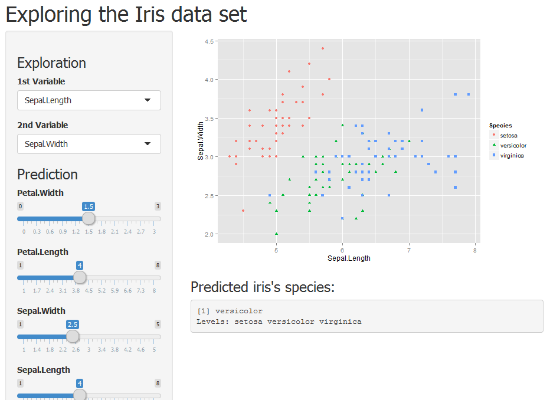

This presentation is created for the course project of the developing data products course and showcase the usage of these two tools:
shinyto create an interactive explorer for Iris datasetslidifyto create this presentation
This presentation is created for the course project of the developing data products course and showcase the usage of these two tools:
shiny to create an interactive explorer for Iris datasetslidify to create this presentationThe application allows the user to: 1. Explore the dataset by looking at the relationship between two Iris characteristics (Sepal.Length,Sepal.Width,Petal.Length,Petal.Width) on a graph. 2. Input values to predict Iris species using regression trees
The application is hosted at https://adion.shinyapps.io/devdataprod and the source code can be found at https://github.com/aldion/devdataprod

Prediction model is done using recursive partionning and regression trees :
library(caret)
modFit <- train(Species ~ ., method="rpart", data=iris)
print(modFit$finalModel)
## n= 150
##
## node), split, n, loss, yval, (yprob)
## * denotes terminal node
##
## 1) root 150 100 setosa (0.33333333 0.33333333 0.33333333)
## 2) Petal.Length< 2.45 50 0 setosa (1.00000000 0.00000000 0.00000000) *
## 3) Petal.Length>=2.45 100 50 versicolor (0.00000000 0.50000000 0.50000000)
## 6) Petal.Width< 1.75 54 5 versicolor (0.00000000 0.90740741 0.09259259) *
## 7) Petal.Width>=1.75 46 1 virginica (0.00000000 0.02173913 0.97826087) *
predict(modFit,data.frame(Sepal.Length,Sepal.Width,Petal.Length,Petal.Width))
## Error in data.frame(Sepal.Length, Sepal.Width, Petal.Length, Petal.Width): object 'Sepal.Length' not found